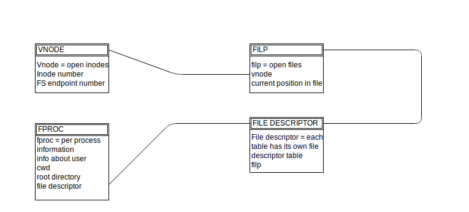
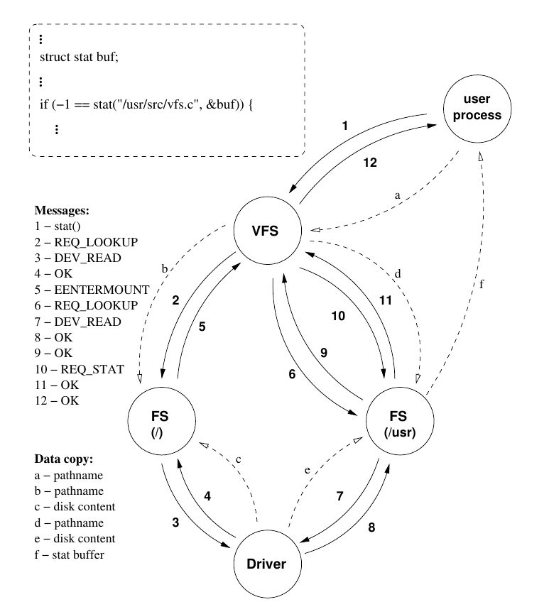

The Virtual File System is an abstraction layer over the file system implementations in the operating system. It handles all system calls related to the file syste and allows for client applications to access different types os file systems in a uniform way. It also provides a common interface to several kinds of file system implementations.
It represents a mounted file system. It contains the device number, the mount flags, the maximum file size on the given partition. It refers to the mounted file system's root vnode and to the vnode on which the file system is mounted on
The filp object represents an open file. It specifies how the file was opened, which vnode it refers to and the current file position. The rest of the fields are used by the implementation of the select system call.
Structure used to manage file locking.Contains a pointer to vnode,lock type- read and write lock, pid of process holding the lock etc.
The fproc object maintains per-process information. It contains working directory's inode number, root directory's inode number, user id, process id, kernel endpoint of the process etc.
All the communication between VFS and caller process and File systems takes place using messages. MINIX messages consist of a general header - which contains the sender process's endpoint number and the message type - and an additional part. The additional part is deined as a union of different structures that were needed for this communication between processes.
VFS spawns worker threads at startup. Main thread fetches requests and replies and hands them off to idle or reply-pending workers.
There are types of system calls in file systems that are handled in different manners by VFS.
1. System calls with path name argument eg. mkdir, acccess, chmod, open, create, mknod, chdir, chroot, unlink, utime
2. System calls with file descriptor argument eg. read, write, lseek
3. System calls without argument eg. fork, exit, sync, fsync
Let's consider system call stat() with an argument /usr/web/index.html. This is help you in understanding VFS and its workflow.
Assume
The user process calls the stat() function of the POSIX library which builds the stat request message and sends it to the VFS process.
(a) The VFS process copies the path name from userspace.
The VFS first issues a lookup for the path name. It determines that the given path is absolute, therefore the root FS process has to be requested to perform
the lookup.
(b) The root FS process copies the path name from the VFS address space.
During the lookup in the root FS process the root directory has to be read in order to find the string "usr". Let us assume that this information is not in the buffer cache. The root FS asks the Driver process to read the corresponding block from the disk.
The driver reads the block and transfers back to the FS process. It reports OK.
(c) The driver copies the disk content into the FS buffer cache.
The root FS process examines the "usr" directories inode data and realizes that there is a partition mounted on this directory. It sends the EENTER MOUNT message to the VFS that also contains the number of characters that were processed during the lookup.
The VFS looks up in the virtual mount table which FS process is responsible for the "/usr" partition. The lookup has to be continued in that FS process ( /usr: Mininx filesystem partition). The VFS sends the lookup request and with the rest of the path name.
d. The "/usr" FS process copies the path name from the VFS address space.
The FS process that handles the "/usr" partition continues the lookup of the path name. It needs additional information from the disk, therefore it asks the driver process to read the given block and transfer it into the FS process buffer cache.
The driver reads the disk and transfers back to the FS process. It reports success.
(e) The driver copies the disk content into the "/usr" FS process buffer cache.
The /usr FS process finishes the lookup and transfers back the inode's details to the VFS.
The VFS has all the necessary information in order to issue the actual REQ STAT request. The FS process is asked to perform the stat() operation.
The FS process fills in the stat buffer. Let us assume that all the information needed for this operation is in the FS process' buffer cache, therefore no
interaction is involved with the Driver process. The FS copies back to the user process' address space. It reports success for the VFS.
(f) The FS process copies the stat buffer to the caller process address space.
The VFS receives the response message from the FS process and sends the return value back to the POSIX library. The function reports success back to the user process.

Further Reference : http://www.minix3.org/theses/gerofi-minix-vfs.pdf